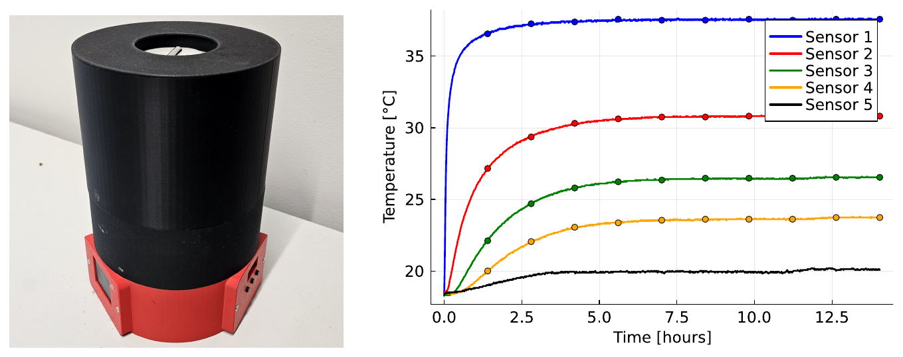
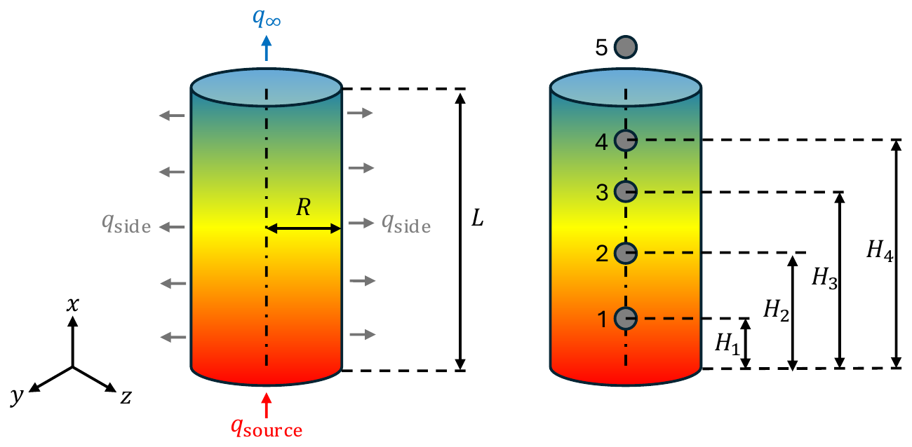
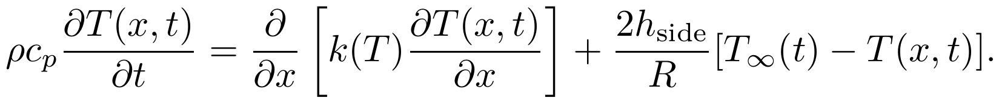
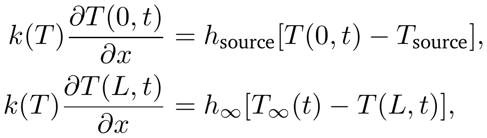
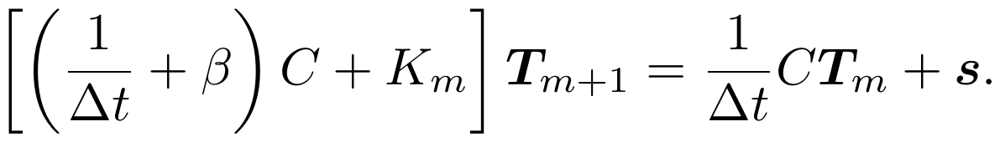
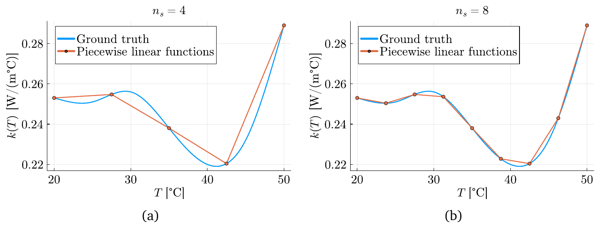
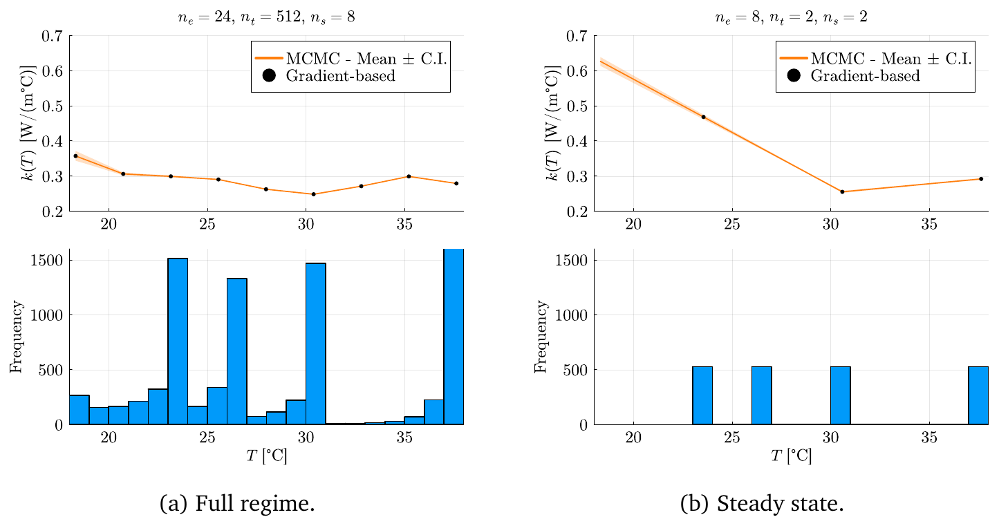
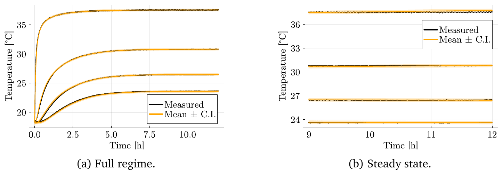

From experiment to calibrated model: temperature-dependent thermal conductivity
Key result. About 40 times less computation with 99% accuracy, on the transient dataset.
The experiment
I designed and built this prototype myself. It is 3D-printed around a column of paraffin wax. A brass plate at the bottom is heated, and a controller holds the plate at a set temperature. Styrofoam insulates the sides, and the top is open to the air. Four temperature sensors along the axis and one for the ambient air record the response for about 14 hours.


The model
The example is a nonlinear heat transfer problem. The thermal conductivity k(T) of the wax depends on temperature, which makes the problem nonlinear, and k(T) is the unknown. Heat conduction along the column, with losses through the sides, is described by the first equation. The boundary conditions describe the heated plate (x = 0) and the open top (x = L). The initial temperature is the ambient temperature.


I solve this with linear finite elements in space and backward Euler time stepping, which is implicit in time. Each time step requires solving one linear system:

The Bayesian part
Calibration is posed as Bayesian inference. The likelihood models the data from the temperature sensors: the simulated temperatures plus measurement noise. The prior models what we already know about the conductivity values. The posterior, explored with MCMC, returns the conductivity with credible intervals instead of a single curve.
A model for the conductivity
To estimate a function, we first need a model for it. I use piecewise linear functions because they are easy to understand and to model. The number of segments sets the complexity: more segments allow a more detailed curve.

The algorithm
The algorithm chooses how fine the model needs to be: the number of finite elements, the number of time steps, and the number of conductivity segments. It refines only until the numerical error is comparable to the measurement noise, and adds segments only while information criteria (BIC and DIC) say they are justified. It stops when the model is good enough for the data, instead of over-refining.
On the real data it adapted to the information in each dataset. With the full data (transient and steady state) it chose 24 elements, 512 time steps and 8 segments. With steady-state data only it chose 8 elements, 2 time steps and 2 segments.


Result
For the transient dataset, the algorithm used about 40 times less computation than a fixed fine setting, while preserving 99% accuracy: in a synthetic test, predictions deviated from a very fine reference by about 0.01%. In practice, calibration stops when more refinement no longer improves the answer, so computing time is not wasted.
The real-data run illustrates the algorithm: the other physical properties were calibrated beforehand and held fixed, and the model is one-dimensional.